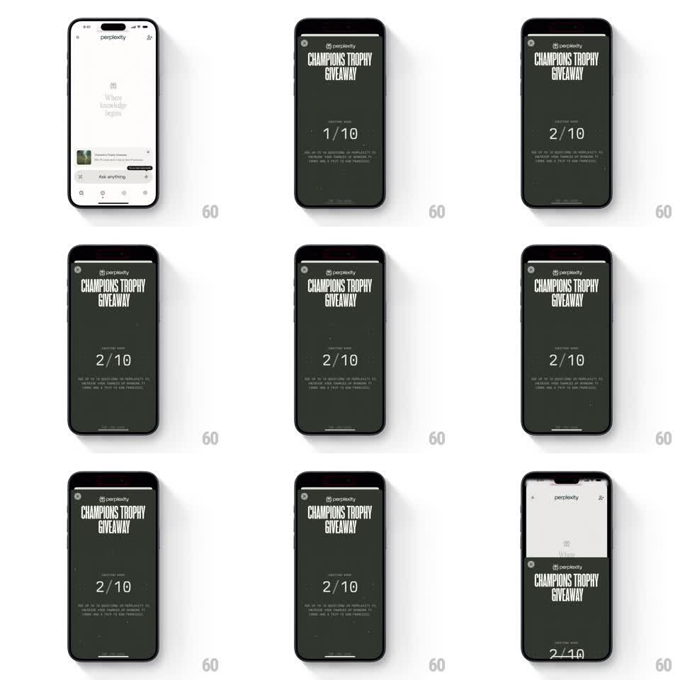

Media
Frame-by-frame

Rebuild this animation 1:1: Perplexity's campaign counter - a split-flap digit flip on the "QUESTIONS USED" tally inside a full-screen Champions Trophy Giveaway view, which then collapses seamlessly into a compact banner on the home screen.

Rebuild this animation 1:1: Perplexity's campaign counter - a split-flap digit flip on the "QUESTIONS USED" tally inside a full-screen Champions Trophy Giveaway view, which then collapses seamlessly into a compact banner on the home screen.
## Integration
Integration: stack-agnostic spec - springs given as stiffness/damping, timed motions as duration + curve; map every value to your framework and animation library of choice.
## Scene
Full-screen dark-olive campaign view: Perplexity wordmark top center over huge condensed caps "CHAMPIONS TROPHY GIVEAWAY", a small "QUESTIONS USED" label, a large "1/10" counter, fine-print terms below, a close X top-left and a progress bar at the very top. Home: light Perplexity start screen ("Where knowledge begins", Ask anything bar, bottom nav) where the campaign becomes a compact dark banner card above the input.
## Motion spec
Pattern: split-flap digit flip plus a fullscreen-to-banner collapse.
- Counter increment: the changed digit flips like a split-flap - the old digit's top half tips down (rotateX 0 -> -90deg, 150ms, ease-in), the new digit's bottom half completes (rotateX 90 -> 0, 150ms, ease-out), with a 1px seam shadow at the midpoint; "1/10" becomes "2/10".
- A subtle tick haptic and a brief digit glow (10% brightness flash, 100ms) land on the settled number.
- Collapse: the full-screen view shrinks toward the banner slot (scale + translate matched to the banner's rect, spring ~280/22, 500ms), its title and counter reflowing into the banner's compact layout (elements crossfade to their small variants at 60% of the way).
- The top progress bar slides up and out first (200ms), the X fades.
- On home, the banner settles with a soft shadow (shadow fades in over 300ms).
## Calibration
- Only the changing digit flips; the "/10" stays rock still.
- The collapse must be one continuous transform - the campaign never disappears and reappears.
## Reduced motion
Counter crossfades (200ms); collapse becomes a 250ms fade to the banner.
## Don't miss
- Keep the condensed caps type and dark-olive color identical in both layouts.
- The banner is tappable later - the collapse ends in a real, interactive card, not an image.